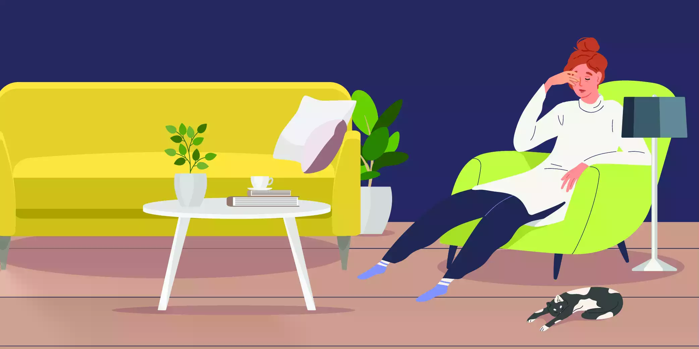
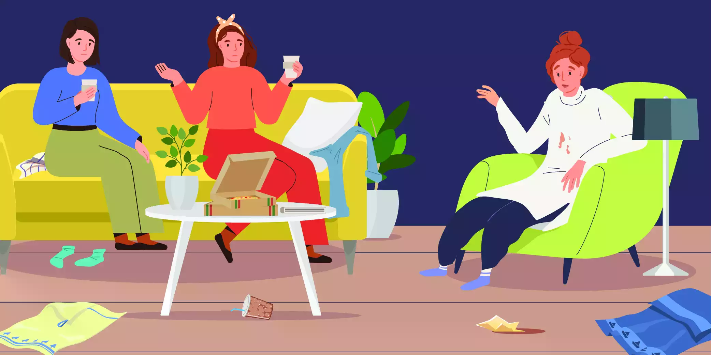

Do you remember the first time you felt like you no longer want to do that one thing that used to cheer you up the most? Could be gardening, bowling, swimming or even a good sweaty run, which always worked wonders at making you feel better. When and why did you give up on it? What is the reason that you have no interest or lack of interest in things you used to enjoy?

What is Anhedonia / feeling no interest?
Those with Anhedonia find it difficult to feel pleasure or have any interest in things. This problem is a very common symptom of depression and is usually knows as a lack of interest or no interest in things, even those that an individual used to very much enjoy. However, this is not the only reason that can cause Anhedonia. Schizophrenia, Parkinson’s, psychosis are also some that can cause Anhedonia. While it is normal to lose interest in things at some point in everyone’s life, this situation is not the same as that. Anhedonia takes one to the extreme limits of losing the ability to enjoy things to a point that nothing excites them anymore. At any rate, anhedonia or lack of interest makes things worse, even for those who are already depressed. Anhedonia can also appear without an underlying mental disorder.
Types of Anhedonia
Social Anhedonia
When you have social anhedonia, what you despise the most is spending time with other people. You do not want to socialize with anyone else but yourself. Why this is happening is quite obvious. Social situations give you no pleasure. You have a lack of interest or no interest at all in what is happening when you are with other people.
Social Anhedonia makes relationships a lot of work, and most of the time a flop. You can not give in the mental commitment necessary to make a relationship work, and it makes it difficult for anyone to rely on you. When there is nothing about hanging out with others that make you happy, you are unlikely to be motivated to spend time with anyone at all. You can not pass over a simple positive message such as you had a good time, or that you love them. Positivity, joy and optimism are necessary for a relationship to work. With Anhedonia, you just can’t be happy. This is not done on purpose. However, the impact does not get any simpler.
Physical Anhedonia
When one has psychical anhedonia, they don’t feel physical pleasures. Hugs and caressing give them no pleasure or happiness. They do not get intimate/ sexually active, simply because none of that brings them any joy. Those with physical anhedonia do not feel tactile pleasure. In other words, food does not taste as good as it did and physical touch gives them no pleasure. When one does not feel physically loved or happy, they sink into a blank mode. Remember the last time someone gave you a hug and reassured you that you are okay? Do you remember the joy and happiness that gesture gave you? Except in this situation, those with physical anhedonia feel even more sad, hopeless and depressed than a normal person does, but no reassurance or love or care can get them to feel better. Simply because they do not recognize joyful feelings.

What causes no interest?
As explained above, Anhedonia or lack of interest is mainly connected as a symptom of Major Depressive Disorder and other mental health disorders which can result in depression. This does not mean that everyone who experiences a lack of interest is depressed or that every depressed person experiences a lack of interest. Anti-depressant drugs and medications can also cause anhedonia or a general lack of interest in life with its numbing effect.
Except for the above-mentioned illness, drug, alcohol and substance abuse can also result in Anhedonia. Also with those that are experiencing eating disorders, personality disorders, anxiety issues, lack of interest can be a common issue.
Research has also proven a link between the function and release of dopamine playing a part in Anhedonia. Dopamine is the chemical that makes one feel good and joyful. This can mess with ones ability to feel happy and content.
Symptoms and signs of Anhedonia
- Feeling hopeless
- Does not respond to comfort and reassurance
- Difficult to console or make them feel happier
- Very rarely laughs or smiles. Almost as if they do not recognize those feelings.
- l withdrawal and likely to isolate themselves
- Unexplained levels of paranoia and fear
- Likely to get sick very often
- Finding it hard to adjust to different types of social situations. Likely to stick to their bubble and spend more time at home or a place they know and are comfortable at.
- Unlikely to understand they are sick or to seek assistance
- Does not feel good about themselves or those around them.
- Can not keep up a conversation because they just do not want to listen and be interested in the topic.
- Emotional ability drop. Can not seem to get their thoughts or feelings together.
- They are not scared of death. In fact, they are suicidal to a point that they are expecting death to come to them sometime soon.
- Physical sensations no longer give them pleasure. For example, they are unlikely to get intimate.
- Can’t put their feelings into words or actions
- Does not want to create new relationships.
- Gradually distances themselves from previous relationships
- Feels no empathy towards themselves or others
- If there are any feelings involved, they are most likely to be negative
Who is at risk when it comes to this issue?
Those in the categories below are more likely to develop Anhedonia than the rest.
- A family history of schizophrenia, depression, Parkinsons or psychosis may develop your risk of attracting those illnesses which can also cause lack of interest/Anhedonia.
- A traumatic or stressful event that impacted you greatly.
- If the person has a history of abuse and neglect which has left a mental scar
- Being diagnosed with an illness that impacts the quality of life
- Being diagnosed with either a severe or an incurable illness that takes a toll on their mental health
- Having an eating disorder
Risk factors do make you more vulnerable and exposed than no risk factors. However, this does not mean that without risk factors you are completely safe from Anhedonia.
Diagnosing
Diagnosing Anhedonia will be mostly about your mood. It will be easy for you to make a list or have on the top of your head all the symptoms you have experienced. This should include the events where you realized that you no longer feel pleasure. Based on your answers your doctor can decide whether you have Anhedonia. This will also include more assessments and further tests if your health care provider believes necessary to rule out any other underlying sicknesses that might be causing Anhedonia.
This diagnosing process will include lab tests and physical symptom processes. If an underlying issue is detected, such as depression, you will receive treatment options from your doctor.
Treatment
There is no clear or direct way of treating Anhedonia. First of all, the treatment depends on what is causing the lack of interest, if there is any. However, like any other mental health issue, the faster and without delay the treatment is, the better the chances are at fast recovery.
It is not a smart thing to seek treatment based on assumptions or through over the counter drugs and medications. This is specifically important when you are seeking to treat an issue such as anhedonia, due to the fact that there can be several underlying causes for this issue. Thus, the primary step is to seek the help of a health care provider, share your concerns and receive a proper diagnosis. Based on the factors of your diagnosis, your treatment differs from one another. In the case, you do have an issue such as depression, psychosis that disrupts your mental health, your health care provider will most probably recommend therapy and counselling. However, if they find a more serious medical issue that can not be helped by therapy alone, they may guide you towards other treatment methods.
Therapy and counselling for Anhedonia
A combination of therapy and psychotic drugs can treat those with anhedonia. If the patient has anhedonia due to depression, anti-depressant drugs, as well as the methods to deal with depression, are used with the guidance of a therapist. There are many different options when it comes to choosing a therapist. You can choose to receive therapy online, or having one-on-one talks with a therapist you trust.
Talk therapy is an effective treatment method when it comes to helping those that are suffering from Anhedonia. However, you will have to find a therapist you feel comfortable opening up to. You are unlikely to feel like they will help because of your general belief that nothing good can happen to you. You will need to look past these lack of interest symptoms, at least momentarily until you find and settle to a therapists guidance. Online therapy can be a good way to start to get past these difficulties.
If you are having trouble finding a therapist, you can ask your doctor for recommendations. However, you may have to try a few therapists before you find one that you feel will help you better. If this process is hard for you and you are overcome with negative feelings that keep you from reaching out for help, involve your family in the process. They can notice your growth and progress and accordingly decide which therapists help better.
Medication and medicine for Anhedonia
Medication and other drugs can be prescribed by your doctor to help you deal with issues such as depression. Basically, the point is to try and treat the root cause which is causing Anhedonia. Even though these medications have been successful up to some point, there have also been reports of side effects. Common side effects of prescription medication such as lethargy and numbness can be an added issue when it comes to Anhedonia since numbing makes the overall problem worse.
Based on your situation and diagnosis, the amount and the frequency that you should take medication is something your doctor will convey to you and it is important you follow these steps so. It may help you reduce inconveniences if you already know of the side effects of the medications. Make sure you ask your doctor and clear any doubts. Also, let them know if you feel any more issues than previously expected. Dosage may need to change and adjust. The issue with mental health problems is that the condition can change overnight. In other words, make sure you report to your doctor any changes you might notice.
Except for these options, other methods doctors use to treat depression such as ECT also show successful results on patients. However, the most important thing to understand is that Anhedonia can easily be a situation that happens without any other underlying cause or an illness. Most of the methods are wrapped around the general idea of depression because most people with Anhedonia are depressed or the sickness is depressing them. Nonetheless, treatment changes given the circumstances. It is essential that you meet a doctor to decide on what is best for you.
Overcoming the effects of Anhedonia/ Lack of Interest
Anhedonia can be a major setback in life. Happiness, joy, contentment, love, reassurance and the sense of value are the feelings humans crave for. Being unable to feel any of this, but feeling all sorts of sadness and disappointment and have no way of feeling better can surely feel like hell. Recovering from Anhedonia is possible but is not easy. Not to mention, the effect it can have on all your relationships and the things you value the most. One of the fatal mistakes one do is thinking that this is who they are, they just can’t be happy and are naturally sad people and not reach out for help. Those that experience anhedonia are more likely to blame themselves, shame themselves and suffer alone.
If you are reading this, we are your assurance that you have a perfectly fixable issue. It may require work, but you are a happy person who deserves to be so. Thus, get the help you need so you can turn your life around and win back the people you lost.
Helping yourself with Anhedonia
Follow these steps to keep your cool while you take steps into recovery. Remember, that consistency is important for you to win this war.
- Follow up with doctors appointments and medication as prescribed.
- Invest yourself in therapy and play an active role in getting better.
- Talk to your loved ones about your issue. Have a circle you can trust to understand you.
- Do not let yourself go astray. Eat right. Sleep right. Get in that workout. You are currently working on your mental health. Your physical fitness is essential for that journey.
- Find comfort in things. It may be difficult to feel joy, but it can’t hurt to listen to soothing music and lie on the beach when the sunsets.
- Don’t let yourself go astray from your family and friends. Force yourself to focus and involve in things. Remember, mental health issues do not have the answers in medicine. It is mostly about training your mind to feel what you want.
- Take it easy on yourself. Your condition deprives you of happiness, and that can be exhausting.
- Read and learn about your condition. Understand that stress can be exemplified because nothing can make you feel better. Avoid stressful situations as much as you can.
- Let yourself feel reassured. Pay attention to the good things people say about you. Try and make sense of it. Absorb the positivity.
Helping someone with Anhedonia
Loving and caring for someone who doe not know how to be loved can be a very exhausting and disappointing situation. Especially if that person once used to be the most loveable before being diagnosed with Anhedonia. It takes a lot of faith to keep loving someone when they have no idea how to accept it or return it. However, they need that faith right now. It is important that you understand that they can not help how they feel and their emotional shortcomings. You giving up on them can stand against their progress. Here are a few ways to help someone with Anhedonia.
- Patience. This is probably the most important thing when it comes to dealing with someone who is unable to be interested in things that you are most passionate about.
- Faith. You need to believe that they will get better and help them through that journey.
- Remember that if it is hard for you, it is harder for them. Not only do they not feel happiness, but they do feel all the negative emotions. They have nothing to combat those with.
- Make sure they follow up with the treatment. With Anhedonia they can easily feel like nothing can help them. Someone that they know and trust in their corner rooting for them is essential for them to keep pushing.
- Show no difference. They can easily feel worthless and that they are hopeless creatures so you making it obvious that they are hurting you will only make things worse and throw them into more depression.
- Educate others about his condition so they do not make him uncomfortable or make him feel worse.
- Reassure them and love them despite them not feeling it. When the medication and therapy work, real-life scenarios can be a further push in eliminating Anhedonia.